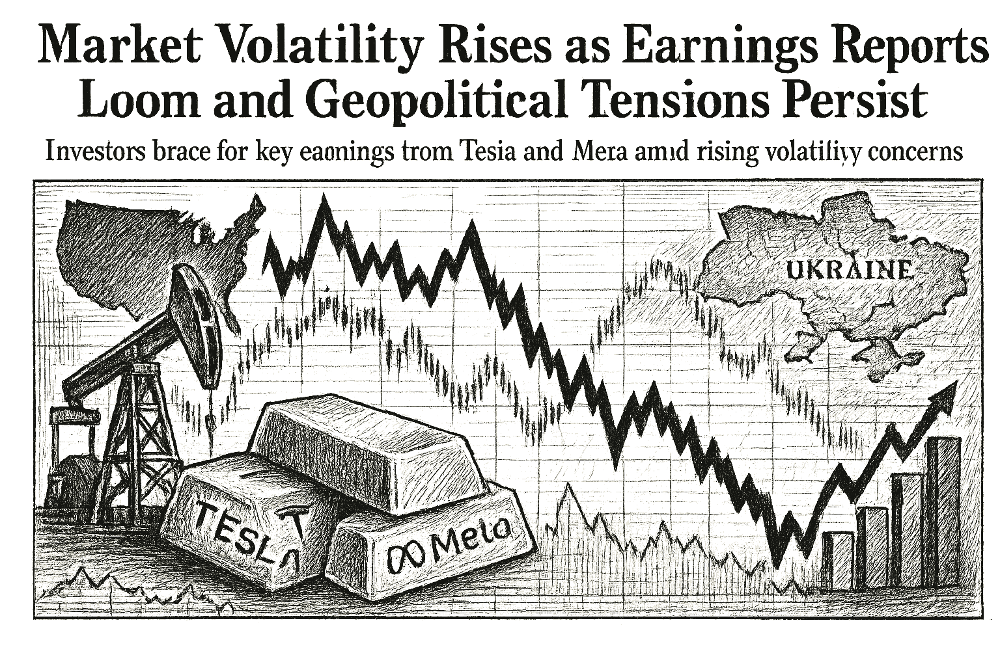

SPY
Current: $768.85Change: -0.75 (-0.10%)
Updated:
Source: yahoo_chartFreshness: fresh


Investors brace for key earnings from Tesla and Meta amid rising volatility and geopolitical concerns.

Today's Headline: Market Volatility Rises as Earnings Reports Loom and Geopolitical Tensions Persist
Setup: Investors brace for key earnings from Tesla and Meta amid rising volatility and geopolitical concerns.
Primary Topic: Earnings Reports and Market Volatility
Specific Development: Tesla and Meta's upcoming earnings reports are creating heightened market anticipation, contributing to increased volatility.
Why Today Is Different: The market is reacting to both earnings expectations and geopolitical tensions, particularly the implications of Musk's decisions regarding Starlink services in Ukraine.
Secondary Topics: Geopolitical tensions; Earnings season; Market volatility
Tone: cautious
Sectors: Technology; Consumer Discretionary
Companies: Tesla; Meta
Commodities: Oil; Gold
Countries Or Regions: United States; Ukraine
Macro Themes: Earnings season; Geopolitical risks
Why This Story: The interplay between earnings expectations and geopolitical developments is crucial for market sentiment and investment strategies.
Why This Matters: Stocks Rise Pre-Bell as Traders Await Meta, Tesla Earnings is the clearest current evidence-led frame for Joshua's observation-only review; missing facts remain explicit intelligence gaps.

Summary: US markets are experiencing mixed movements with SPY and QQQ down, while IWM and DIA show gains.
What Happened Overnight: US stock futures rose amid anticipation for earnings reports, while geopolitical tensions remain a concern.
What Changed Materially: Increased focus on earnings reports from major companies and geopolitical developments.
Which Assets Sectors Are Affected: Technology and Consumer Discretionary sectors are particularly affected by earnings expectations.
Does It Look Like Noise Or A Real Regime Input: This appears to be a significant regime input due to the convergence of earnings and geopolitical factors.
Why This Matters: Joshua can use verified cross-asset moves and deterministic risk context while keeping causation explicitly unresolved.

FDX Earnings Expectations — 2026-10-28, After Close
Consensus EPS: $3.52
Year-ago EPS: unavailable
Expected EPS growth: unavailable
Consensus revenue: $23.0B
Year-ago revenue: unavailable
Expected revenue growth: unavailable
Source: finnhub_earnings_calendar · As of: 2026-10-21T14:15:02.624467+00:00 · Freshness: current
SPCX Earnings Expectations — 2026-10-20, Time Unavailable
Consensus EPS: $0.14
Year-ago EPS: unavailable
Expected EPS growth: unavailable
Consensus revenue: $13.0B
Year-ago revenue: unavailable
Expected revenue growth: unavailable
Source: finnhub_earnings_calendar · As of: 2026-10-21T14:15:02.624467+00:00 · Freshness: current
TSLA Earnings Expectations — 2026-10-20, After Close
Consensus EPS: $0.45
Year-ago EPS: unavailable
Expected EPS growth: unavailable
Consensus revenue: $28.4B
Year-ago revenue: unavailable
Expected revenue growth: unavailable
Source: finnhub_earnings_calendar · As of: 2026-10-21T14:15:02.624467+00:00 · Freshness: current

- WOPR learning pipeline: Learning present — untrusted
- Candidates evaluated 24h: 0
- Current gate: Learning trust
- Notification ledger events in 24h: 15
- Pending orders created/canceled/filled/expired: 4/0/1/0
- Pending lifecycle interpretation: Pending-order cancellations have trackable reasons and no obvious rapid churn pattern.
- Portfolio risk: Label: Moderate / Score: 41.6
- Latest intelligence gap report: intelligence_gap_report_2026-10-18.pdf
Why This Matters: The active gate is Learning trust, so the key question is why candidates are stopping before approval, not how to force trades.

- Sentinel role: infrastructure and operational status only.
- State: ONLINE
- Last successful validation: 2026-10-21T14:14:09.677333+00:00
- Payloads accepted/rejected: 28433/0
- Node health score: 100
Why This Matters: Sentinel is ONLINE, so Joshua should use its context only to the extent the latest accepted pulse is fresh and authenticated.

CANDIDATES MOVING THROUGH JOSHUA'S INVESTMENT-REVIEW WORKFLOW
FROZEN DAILY BRIEF SNAPSHOT | 2026-10-21T14:16:48.522025+00:00
QUEUE SUMMARY | Investment Ready: 0 | Waiting for Price: 0 | Waiting for Evidence: 1 | Research Underway: 2 | Governance Hold: 6 | Monitor Only: 0
Investment-ready status: No candidates are currently Investment Ready.
#4 NVDA - Waiting for Evidence [Moved Up 6->4]
Joshua's Thesis: Positive thesis not yet established.
Why Waiting: Positioning gate failed.
Price: 217.74 now; 217.03 preferred entry
What Unlocks It: Clear valuation support; Evidence that the business quality matches the risk being taken; Independent evidence streams pointing the same way
Portfolio Fit: 61.0/100 — HIGH ↑
Portfolio Fit Drivers: projected Technology exposure 40.1%; projected AI infrastructure exposure 40.1%; candidate amount $100 vs $149 currently allocated
Candidate Risk: 31.0/100 — LOW ↓
Risk Drivers: projected Technology exposure 40.1%; projected AI infrastructure exposure 40.1%; candidate amount $100 vs $149 currently allocated
Next: Positioning status must no longer be warning. Owner: Joshua.
#5 AVGO - Governance Hold [Moved Up 7->5]
Joshua's Thesis: Positive thesis not yet established.
Why Waiting: Governance gate has not cleared.
Price: 333.30 now; 357.70 preferred entry
What Unlocks It: Governance gate clears; Clear valuation support; Evidence that the business quality matches the risk being taken
Portfolio Fit: 61.0/100 — HIGH ↑
Portfolio Fit Drivers: projected Technology exposure 40.1%; projected AI infrastructure exposure 40.1%; candidate amount $100 vs $149 currently allocated
Candidate Risk: 31.0/100 — LOW ↓
Risk Drivers: projected Technology exposure 40.1%; projected AI infrastructure exposure 40.1%; candidate amount $100 vs $149 currently allocated
Next: Re-evaluate after the recorded gate clears. Owner: Columbo.
#8 PLTR - Governance Hold [Moved Up 16->8]
Joshua's Thesis: Positive thesis not yet established.
Why Waiting: Governance gate has not cleared.
Price: 196.90 now; 196.88 preferred entry
What Unlocks It: Governance gate clears; Clear valuation support; Evidence that the business quality matches the risk being taken
Portfolio Fit: 61.0/100 — HIGH ↑
Portfolio Fit Drivers: projected Technology exposure 40.1%; projected AI software exposure 40.1%; candidate amount $100 vs $149 currently allocated
Candidate Risk: 31.0/100 — LOW ↓
Risk Drivers: projected Technology exposure 40.1%; projected AI software exposure 40.1%; candidate amount $100 vs $149 currently allocated
Next: Re-evaluate after the recorded gate clears. Owner: Columbo.
#12 DIA - Research Underway [Moved Up 24->12]
Joshua's Thesis: Positive thesis not yet established.
Why Waiting: Research evidence is still being gathered.
Price: Current price unavailable.; Preferred entry not established.
What Unlocks It: Clear valuation support; Evidence that the business quality matches the risk being taken; Independent evidence streams pointing the same way
Portfolio Fit: 61.0/100 — HIGH ↑
Portfolio Fit Drivers: projected ETF exposure 40.1%; projected Broad market exposure 40.1%; candidate amount $100 vs $149 currently allocated
Candidate Risk: 31.0/100 — LOW ↓
Risk Drivers: projected ETF exposure 40.1%; projected Broad market exposure 40.1%; candidate amount $100 vs $149 currently allocated
Next: Clear valuation support; Evidence that the business quality matches the risk being taken; Independent evidence streams pointing the same way. Owner: Columbo.
#16 QBTS - Governance Hold [Moved Down 10->16]
Joshua's Thesis: Positive thesis not yet established.
Why Waiting: Governance gate has not cleared.
Price: 11.88 now; 17.52 preferred entry
What Unlocks It: Governance gate clears; Clear valuation support; Evidence that the business quality matches the risk being taken
Portfolio Fit: 1.2/100 — VERY LOW ↑
Portfolio Fit Drivers: projected Unclassified exposure 60.0%; projected Unclassified exposure 60.0%; candidate amount $100 vs $149 currently allocated
Candidate Risk: 80.8/100 — VERY HIGH ↓
Risk Drivers: projected Unclassified exposure 60.0%; projected Unclassified exposure 60.0%; candidate amount $100 vs $149 currently allocated
Next: Re-evaluate after the recorded gate clears. Owner: Joshua.
#21 RCL - Governance Hold [Moved Down 15->21]
Joshua's Thesis: Positive thesis not yet established.
Why Waiting: Governance gate has not cleared.
Price: 287.90 now; 278.50 preferred entry
What Unlocks It: Governance gate clears; Clear valuation support; Evidence that the business quality matches the risk being taken
Portfolio Fit: 1.2/100 — VERY LOW ↑
Portfolio Fit Drivers: projected Unclassified exposure 60.0%; projected Unclassified exposure 60.0%; candidate amount $100 vs $149 currently allocated
Candidate Risk: 80.8/100 — VERY HIGH ↓
Risk Drivers: projected Unclassified exposure 60.0%; projected Unclassified exposure 60.0%; candidate amount $100 vs $149 currently allocated
Next: Re-evaluate after the recorded gate clears. Owner: Columbo.
#22 SPCX - Governance Hold [Moved Down 21->22]
Joshua's Thesis: Positive thesis not yet established.
Why Waiting: Governance gate has not cleared.
Price: 164.00 now; 158.32 preferred entry
What Unlocks It: Governance gate clears; Clear valuation support; Evidence that the business quality matches the risk being taken
Portfolio Fit: 1.2/100 — VERY LOW ↑
Portfolio Fit Drivers: projected Unclassified exposure 60.0%; projected Unclassified exposure 60.0%; candidate amount $100 vs $149 currently allocated
Candidate Risk: 80.8/100 — VERY HIGH ↓
Risk Drivers: projected Unclassified exposure 60.0%; projected Unclassified exposure 60.0%; candidate amount $100 vs $149 currently allocated
Next: Re-evaluate after the recorded gate clears. Owner: Advisory Committee.
#24 XRAY - Research Underway [Moved Down 23->24]
Joshua's Thesis: Positive thesis not yet established.
Why Waiting: Research evidence is still being gathered.
Price: 8.88 now; Preferred entry not established.
What Unlocks It: Clear valuation support; Evidence that the business quality matches the risk being taken; Independent evidence streams pointing the same way
Portfolio Fit: 1.2/100 — VERY LOW ↑
Portfolio Fit Drivers: projected Unclassified exposure 60.0%; projected Unclassified exposure 60.0%; candidate amount $100 vs $149 currently allocated
Candidate Risk: 80.8/100 — VERY HIGH ↓
Risk Drivers: projected Unclassified exposure 60.0%; projected Unclassified exposure 60.0%; candidate amount $100 vs $149 currently allocated
Next: Clear valuation support; Evidence that the business quality matches the risk being taken; Independent evidence streams pointing the same way. Owner: Columbo.
#25 UUUU - Governance Hold [Moved Down 22->25]
Joshua's Thesis: Positive thesis not yet established.
Why Waiting: Governance gate has not cleared.
Price: 8.31 now; 14.60 preferred entry
What Unlocks It: Governance gate clears; Clear valuation support; Evidence that the business quality matches the risk being taken
Portfolio Fit: 1.2/100 — VERY LOW ↑
Portfolio Fit Drivers: projected Unclassified exposure 60.0%; projected Unclassified exposure 60.0%; candidate amount $100 vs $149 currently allocated
Candidate Risk: 80.8/100 — VERY HIGH ↓
Risk Drivers: projected Unclassified exposure 60.0%; projected Unclassified exposure 60.0%; candidate amount $100 vs $149 currently allocated
Next: Re-evaluate after the recorded gate clears. Owner: Advisory Committee.
Since the prior Chronicle: ANGX - Removed
Observation only. This section creates no recommendation, order, authority, or execution instruction.

- If NVDA reaches the recorded price condition <= 217.03, which recorded evidence and governance requirements would still remain?
- Which recorded governance requirement must clear before AVGO can advance?
- Which recorded governance requirement must clear before PLTR can advance?
- Which recorded missing evidence item would most change Joshua's current view of DIA?
- What FDX EPS or revenue result would materially change the current recorded thesis?

The market is responding to a confluence of earnings expectations and geopolitical risks, particularly with Tesla and Meta's reports looming. The VIX's rise indicates heightened uncertainty, while sector movements reflect investor positioning ahead of these critical events. The interplay between these factors will be crucial in shaping market sentiment in the coming days.

Compared to: 2026-10-20
- Market weather: Elevated -> Balanced
- Top opportunity: Still DELL
- Joshua gate: Evidence -> Learning trust
- 2Y Treasury.last_price: 4.79 -> 4.79 (unchanged); 2Y Treasury.last_price changed 0.00% versus the prior frozen Chronicle snapshot.
- 2Y Treasury.percent_change: 0.4192872117400517 -> 0.4192872117400517 (unchanged); 2Y Treasury.percent_change changed 0.00% versus the prior frozen Chronicle snapshot.
- 10Y Treasury.last_price: 5.12 -> 5.12 (unchanged); 10Y Treasury.last_price changed 0.00% versus the prior frozen Chronicle snapshot.
- 10Y Treasury.percent_change: -0.5825242718446649 -> -0.5825242718446649 (unchanged); 10Y Treasury.percent_change changed 0.00% versus the prior frozen Chronicle snapshot.
- 30Y Treasury.last_price: 5.42 -> 5.42 (unchanged); 30Y Treasury.last_price changed 0.00% versus the prior frozen Chronicle snapshot.
- 30Y Treasury.percent_change: -1.0948905109489142 -> -1.0948905109489142 (unchanged); 30Y Treasury.percent_change changed 0.00% versus the prior frozen Chronicle snapshot.
- SPY.last_price: 770.922 -> 768.85 (down); SPY.last_price changed 0.27% versus the prior frozen Chronicle snapshot.
- SPY.percent_change: 0.17177754677754714 -> -0.09745322245322245 (down); SPY.percent_change changed 156.73% versus the prior frozen Chronicle snapshot.
- QQQ.last_price: 722.822 -> 720.71 (down); QQQ.last_price changed 0.29% versus the prior frozen Chronicle snapshot.
- QQQ.percent_change: -0.840661225049735 -> -1.130393031072091 (down); QQQ.percent_change changed 34.46% versus the prior frozen Chronicle snapshot.
- IWM.last_price: 277.13 -> 276.42 (down); IWM.last_price changed 0.26% versus the prior frozen Chronicle snapshot.
- IWM.percent_change: 2.122563289973096 -> 1.860927884438225 (down); IWM.percent_change changed 12.33% versus the prior frozen Chronicle snapshot.

The combination of earnings season and geopolitical tensions has shifted the market's focus and increased volatility.
No new warnings; however, the elevated volatility requires close monitoring.
Portfolio Construction Review
Current allocation: 149.49 allocated.
Largest sector: Energy at 33.4%.
Largest theme: Energy income at 33.4%.
Diversification: Mixed (66.6).
Cash allocation: 85.1% unallocated.
Recommended exposure: DELL at portfolio-fit score 61.0.
Portfolio fit: DELL has a mixed portfolio fit; the diversification improvement is not decisive yet.
Why This Matters: Portfolio Manager evaluates whether an opportunity improves this portfolio; it does not select the investment, vote, or authorize execution.

Focus on the implications of earnings reports and geopolitical developments for market direction today.

| Can trigger trade | no |
| Can modify trade rules | no |
| Can add watch items | yes |
| Can add review questions | yes |
| Can adjust confidence notes | yes |
| Input policy | external_intelligence_plus_sanitized_internal_observations |
| External policy | The Editor-in-Chief synthesizes current world/market context where available and labels unknowns; provider/model provenance remains separate. |
| Internal policy | Joshua/WOPR/Sentinel facts are supplied as sanitized observation-only summaries. |
| Editorial model | gpt-4o-mini |
- Selected by a deterministic daily rotation through symbols already present in the persisted Chronicle snapshot.
- Committee status: gather_more_data; confidence: 72.6.
- Next recorded catalyst: FOMC Meeting Two-day meeting, October 27 - 28 Press Conference.
- SpaceX Earnings Blow Past Wall Street Estimates
- Desk: earnings; source: Yahoo; linked symbols: TSLA.
- Published: 10/20/26 13:44 MST.
- High-impact watch: FOMC Meeting Two-day meeting, October 27 - 28 Press Conference - 10/28/26 11:00 MST.
- Affected assets: US equities, Treasuries, USD; source: federal_reserve_calendar.
- SPCX earnings: October 20, 2026, time unknown.
- TSLA earnings: October 20, 2026, after close.
- FDX earnings: October 28, 2026, after close.
- Consumer Discretionary: 3.50% session performance; source: persisted sector ledger.
- Materials: 2.92% session performance; source: persisted sector ledger.
- Health Care: 2.43% session performance; source: persisted sector ledger.
- NASDAQ FUTURES: 1.65% recorded move; price: 29877.5.
- Session: open; catalyst status: possible; source: yahoo_chart.
- Geopolitical developments in Ukraine; why it matters: Could impact oil prices and overall market sentiment.
- State: broad_strength; score: 80.80/100; advance/decline ratio: 3.41.
- Above 50-day average: 53.80%; sample: 119; provider: sentinel_sampled_breadth.
- Decision outcomes evaluated: 16; currently untestable: 0.
- Warning review: unknown 3; confidence calibration: insufficient_sample.
- Current macro regime: defensive_rotation; change probability: unavailable.
- Risk dashboard: neutral (44/100); breadth: broad_strength; sentiment: neutral.
- Scenario board only - a current-state observation, not a forecast or execution instruction.
- Built Berkshire Hathaway into a major conglomerate while becoming the best-known practitioner of long-term value investing.
- Published quotation: "Price is what you pay. Value is what you get."
- Published framework: Treat shares as fractional ownership of businesses. Favor understandable companies with durable advantages, capable management, strong cash economics, and a sensible price; then let compounding work over long periods.
- Committee lens: Buffett supplies the durable-business and capital-allocation lens: is the asset understandable, defensible, well managed, and worth owning beyond the next market move?
- Public philosophy profile only; no participation, endorsement, or current recommendation is implied.
- If NVDA reaches the recorded price condition <= 217.03, which recorded evidence and governance requirements would still remain?
- DELL: No canonical symbol-specific material event is linked.
- Attach the missing DELL evidence before the next committee review.
- Define evidence that would confirm or retire each unresolved warning before the next review window.
- If NVDA reaches the recorded price condition <= 217.03, which recorded evidence and governance requirements would still remain?
- Which recorded governance requirement must clear before AVGO can advance?
- Which recorded governance requirement must clear before PLTR can advance?
- Which recorded missing evidence item would most change Joshua's current view of DIA?
- Evidence agenda: DELL - No canonical symbol-specific material event is linked.
- Proposed review: Tesla's earnings report; why it matters: Could provide insights into consumer demand and production capabilities.
- Proposed review: Meta's earnings report; why it matters: Will shed light on advertising revenue trends amid economic pressures.
- Canonical instruments reviewed: 24; delayed 6, fresh 18.
- Leading sources: yahoo_chart (21), treasury_official_yield_curve (3).
- Snapshot recorded: 10/21/26 07:15 MST.
Market Volatility Rises as Earnings Reports Loom and Geopolitical Tensions Persist
Storm meter: Elevated
#4 NVDA - Waiting for Evidence [Moved Up 6->4]
Observation mode: observation_only
Watch: Tesla's earnings report; why it matters: Could provide insights into consumer demand and production capabilities.
Question: If NVDA reaches the recorded price condition <= 217.03, which recorded evidence and governance requirements would still remain?